| 日付 | 2012年12月24日（月） |
|---|---|
| 山域 | 高尾周辺 |
| メンバー | 家族（長女・1歳） |
| 山行形態 | 子連れ日帰り |
| アクセス | 車 |
| ルート (Map) | 相模湖駅 (8:20) - (10:21) 明王峠 - (10:56) 陣馬山 (11:47) - (12:19) 明王峠 - (13:36) 相模湖駅 |
初めて子供と2人で山に行ってみることにする。
子供は久しぶりにキャリアに乗せて、ガッツリ歩く予定だ。
2人きりで車に乗るのは不安なため、家からできるだけ近い山を選択。
4年ぶりに陣馬山に行くことにする。
この辺りの山は公共交通機関利用がほとんどで登山者用の駐車場はあまり見当たらない。
相模湖駅前の相模湖ふれあいパークの駐車場が利用できるので、ここに車を停める。標高200m。
利用料金は30分100円で登山で使用するには少々高い。
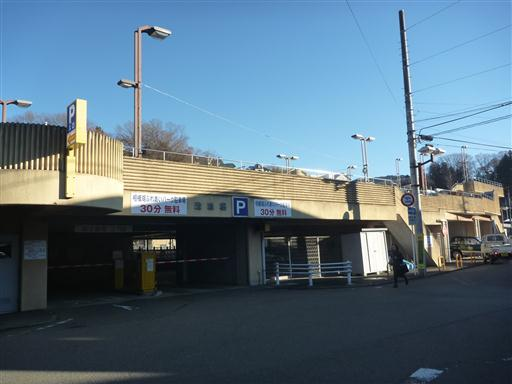
登山口を探してさまようが見つからない。
慈眼寺の墓の坂を登った先に細い踏み跡があり、そこを越えると陣馬山への標識が見つかる。
相模湖駅から国道に出るべきなのをショートカットしようと考えたのが間違いだったようだ。
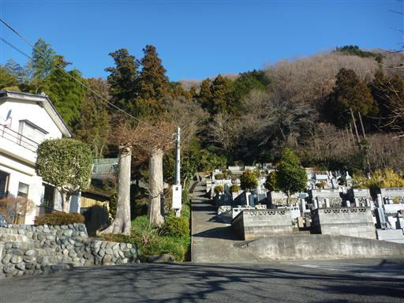
与瀬神社に到着。立派な社が建っている。この神社から登山道は始まる。
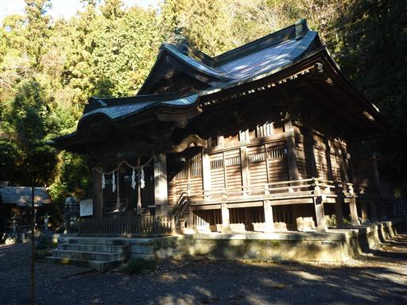
眼下には立派な門も見えている。本来であればこの階段を登ってくるはずだった。
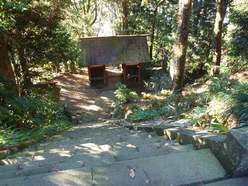
陣馬山へのメイン登山道ではないため人通りは少ないが、良く整備されている。
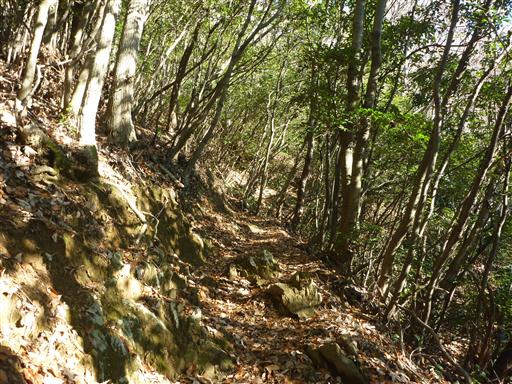
最初だけ急傾斜の登山道だったが、そこからはずっと平らな道が続く。
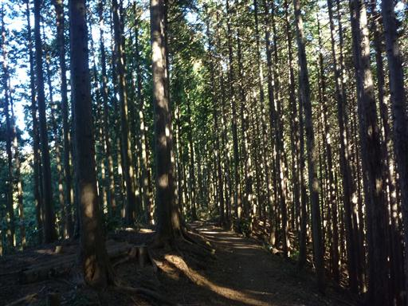
1箇所林道を横切る場所がある。この辺りで子供が泣き出す。
寒いのかと思い歩かせてみるが、ますます泣くばかり。一喝するとようやく泣き止んだ。
キャリアに乗っているといつもは落ち着いているのだが、近くに母親がいないと不安なのかもしれない。
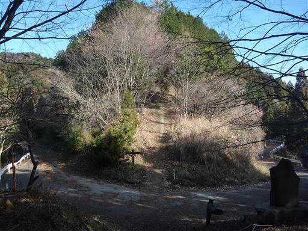
石投げ地蔵嬢ヶ塚。側に解説板が置かれているが要領を得ない。
とりあえず石を一個積んでおく。
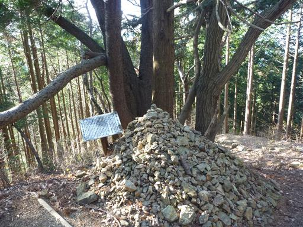
明王峠に到着。明るく開けた峠で多くの登山者がここで休憩している。
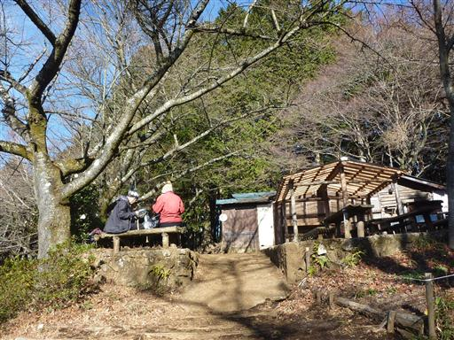
明王峠で他の登山道と合流したため、ここから人影は急に多くなる。
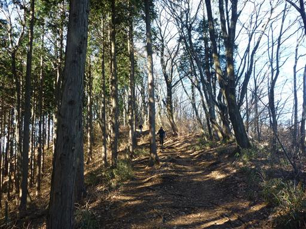
ドラム缶の中の水は完全に凍っている。
歩いているとさほど寒くないが、背負われている子供は寒いだろう。

トレイルランを楽しんでいる人ともたびたびすれ違う。
この辺りは登山道が良く整備されていて、ロングコースも組めるため
トレイルランには最適な山域だ。少々人が多く危険なのが玉に瑕か…
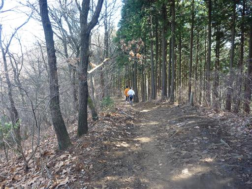
山頂部が見えてきた。この辺りの登山道は多くの登山者に踏まれてドロドロだ。
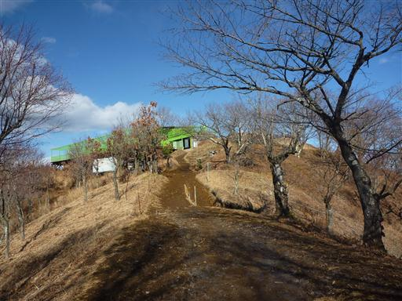
陣馬山山頂に到着。標高857m。
白馬の像が陣馬山のシンボルだ。前回来た時より美しいが塗り替えられたのだろうか？
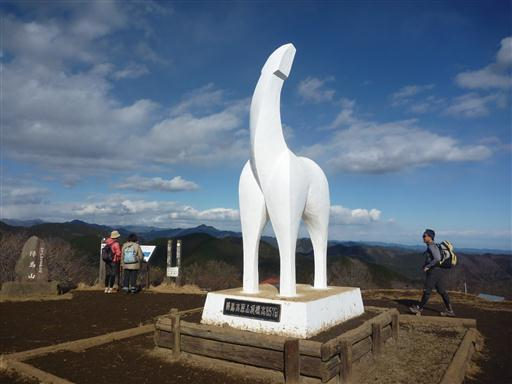
山頂からの展望はなかなか素晴らしい。
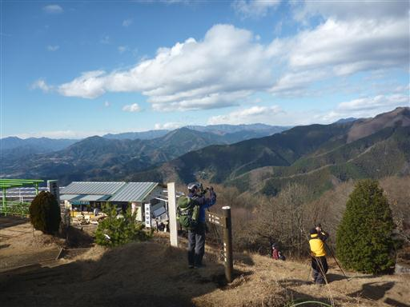
北の方角。「あれが男体山であれが燧ヶ岳」と解説している人がいる。
確かに肉眼ではそれらしきものが見えるが、はっきりとは分からない。
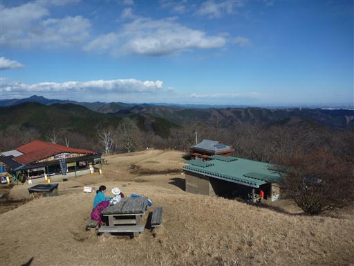
北東方向には関東平野の向こう側に薄らと筑波山が見えている。
筑波山と陣馬山は同じくらいの標高だ。
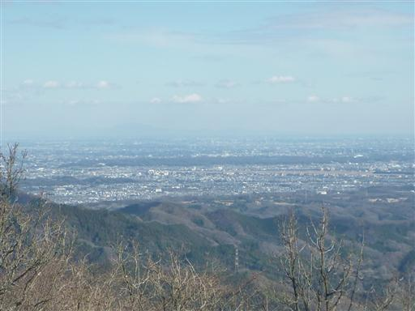
肝心の富士山は雲が取れそうで取れず、結局半身しか姿を見せてくれなかった。
寒いため、山頂で昼食をとったら早々に下山することにする。
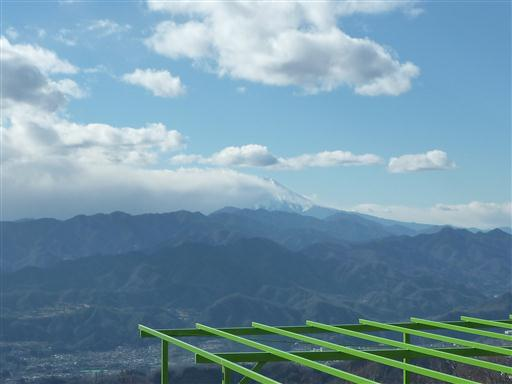
下山は途中まで来た道を戻る。明王峠の売店は営業をしていないが相変わらず人影は多い。
ここから１0分ほど下った林道との交差点で、景信山を目指す道迷い家族連れ登山者を発見。
正しい道を教えてあげると、元来た道を引き返していった。登り返す元気があるのは良いことだ。
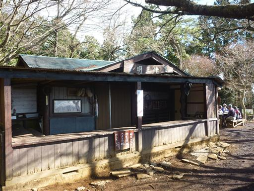
帰りは下山道から少し離れて矢の音という名のピークを踏んでいくことにする。
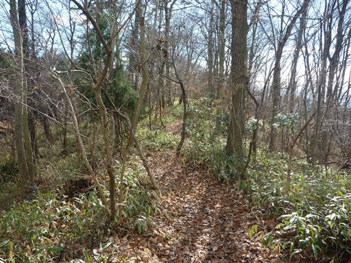
矢の音山頂に到着。尾根の上の小さな瘤だ。
標識には「藤野町十五名山」と書かれているが、お世辞にも名山とは言えない。

分岐点まで引き返すのは面倒なため、山頂から直接、下山道を目指すことにする。
標識はないが同じことを考える人はいるようで、薄らと踏み跡が見える。
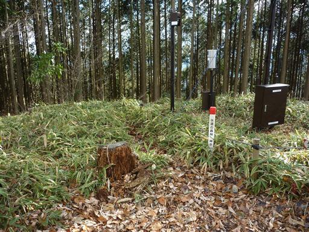
植林地帯の中のかなり急傾斜の踏み跡を下って行く。
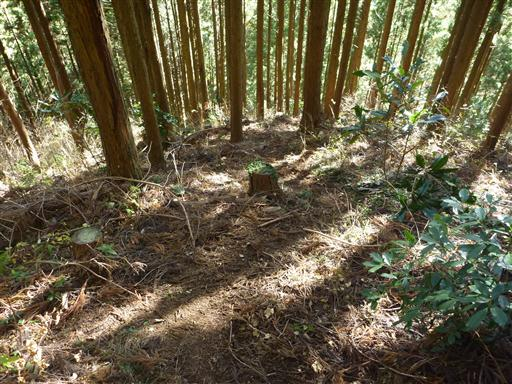
下りついたところは尾根コースと沢コースの分岐点。
標識はあるのに沢コースを示す案内が無いのが気がかりだ。
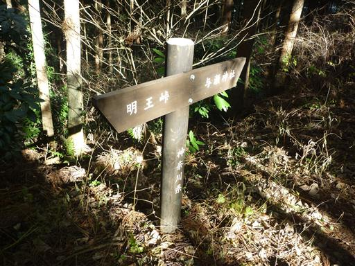
しかし踏み跡は比較的しっかりしているので、予定通り沢コースを下ることにする。
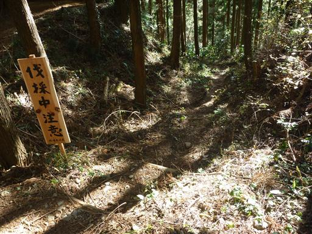
人影は全くないが歩きやすい道が続く。
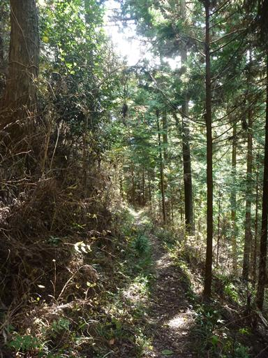
水位を観測するための装置（？）が所々に設置されている。
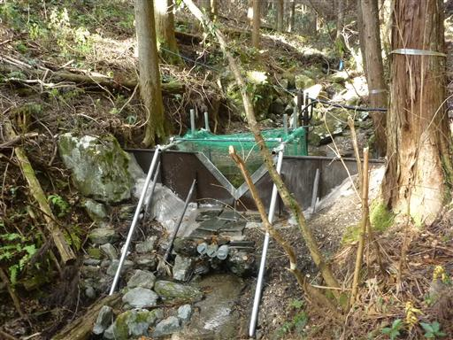
道は途中から林道になる。山と高原地図には林道が記載されていなかったのだが…
長い林道をだらだらと下って行く。林道のゲート付近に車を停めている登山者がいた。
その手があったか。
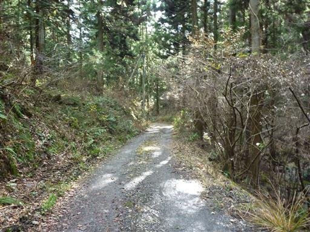
後は駐車場に向かって車道を歩くのみ。
与瀬神社の立派な鳥居が立っている。ここを歩いていくのが正しい登山道のようだ。
子供と二人きりの初めての山登り。車でも山でも少々ごねられたが何とか乗り切れた。
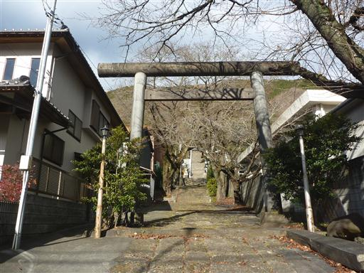